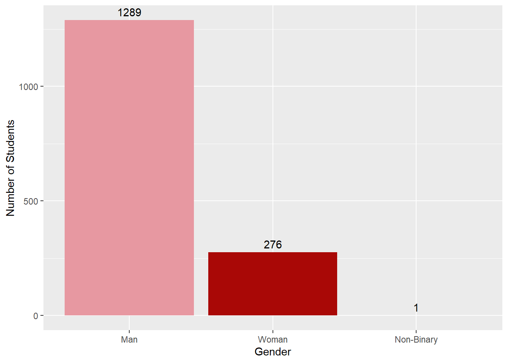
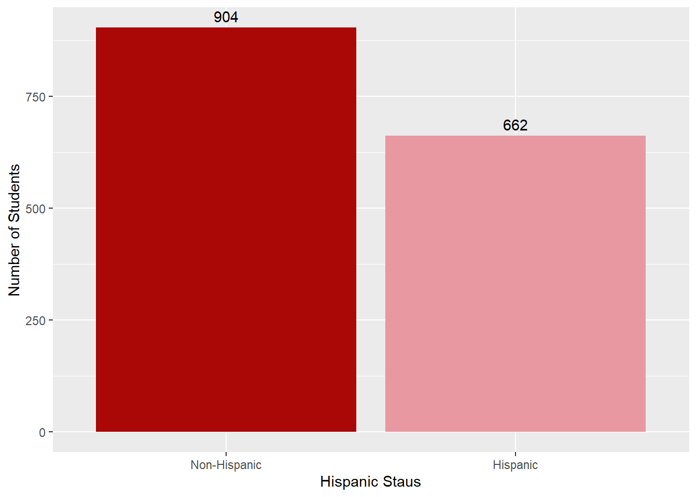
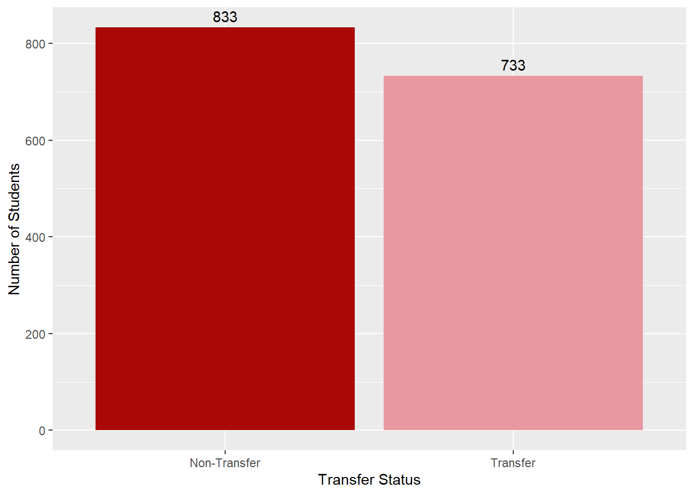
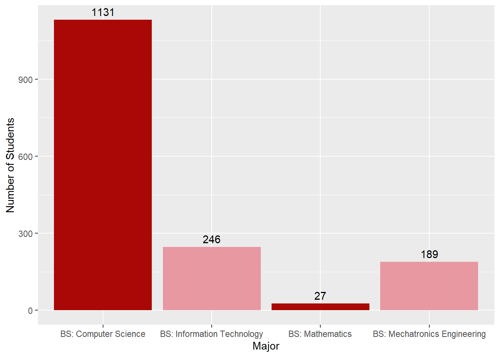

library(tidyverse)
library(plotly)
setwd("~/COMPSCI_Research")
ddata <- read.csv("DeDuped_Data.csv")COMPSCI Analysis
Data Initialization
# Removes NA Values and sums rows for each student if over 1
BinaryChecker <- function(x) {
x[is.na(x)] <- 0
as.integer(rowSums(x) > 0)
}
# Removes NA Values and sums rows for each student
SummaryChecker <- function(x) {
x[is.na(x)] <- 0
as.integer(rowSums(x))
}
# Recodes Gender to binary
ddata$Gender <- as.character(ddata$Gender)
ddata$Gender_Binary <- recode(ddata$Gender,
"Man" = "0",
"Woman" = "1",
.default = "1"
)
#Runs Binary/Summary Checker
ddata$Did_Graduate_All <- BinaryChecker(ddata[, grep("_Graduate$", names(ddata))])
ddata$Units_All <- SummaryChecker(ddata[, grep("_Unit_Load$", names(ddata))])
ddata$Housing_All <- BinaryChecker(ddata[, grep("_Lived_On_Campus$", names(ddata))])
ddata$Tutoring_All <- SummaryChecker(ddata[, grep("_Tutoring_Visits$", names(ddata))])
# Adds & Calculates Terms Attended
ddata <- ddata %>%
rowwise() %>%
mutate(Terms_Attended = sum(!is.na(c_across(ends_with("_Unit_Load"))))) %>%
ungroup()Data Structure
Data Showcase
Values
Student: Numerical student identifier
Term_Code: numeric identifier for term
Term_Desc: word description of the term that corresponds to Term_Code
First_CI_Term: numeric identifier for the term that students started at CI
First_CI_Term_Code: word description of First_CI_Term
First_CS_Term: numeric identifier for the term that students started
First_CS_Term_Code: word description of First_CS_Term
Is_Hispanic: binary, 1 for yes, 0 for no
Gender: categorical, values include Man, Woman, and Non-Binary
major1, major2, major3: major(s) that students had declared during the term in question
Is_Transfer: binary, 1 for yes, 0 for noTerm Code Specific
Unit_Load: numeric, number of units attempted
Lived_On_Campus: binary, 1 for yes, 0 for no
Num_Tutoring_Visits: integer, count of visits to LRC, WMC, and STEM Center
Did_Graduate: binary, 1 for yes, 0 for noDemographic Exploration
Gender
Computer science programs have historically under-represented women and non-binary populations. This same relationship can be seen from the data from Channel Islands. Due to the small sample size of non-binary (n = 1), their value was re-coded as being female for future analyses.

mdata <- ddata[ddata$Gender_Binary == 0, ]
fdata <- ddata[ddata$Gender_Binary == 1, ]It was found that both males and females stay at Channel Islands roughly the same amount of terms with males staying 5.11 terms and females staying 5.59 terms on average. A t-test determined a non-significant difference between the two groups (p > .05).
mean(mdata$Terms_Attended) # Male Terms Mean
mean(fdata$Terms_Attended) # Female Terms Mean
t.test(mdata$Terms_Attended, fdata$Terms_Attended, alternative = "two.sided", var.equal = FALSE, conf.level = 0.95)Graduation rates were found to be non-significantly different (p > .05), with males graduating 44.76% of the time and females 42.24% of the time across all terms.
mean(mdata$Did_Graduate_All) # Male Graduation Mean
mean(fdata$Did_Graduate_All) # Female Graduation Mean
t.test(mdata$Did_Graduate_All, fdata$Did_Graduate_All, alternative = "two.sided", var.equal = FALSE, conf.level = 0.95)Hispanic Status
Due to Channel Islands being a Hispanic Serving Institution (HSI), exploration of student’s Hispanic Status was important to us. The following chart showcases the makeup of Hispanic and Non-Hispanic student’s in the Computer Science Department.

nhisdata <- ddata[ddata$Is_Hispanic == 0, ]
hisdata <- ddata[ddata$Is_Hispanic == 1, ]Student’s from both identity statuses attended same amount of terms (Winter, Fall, Spring, Summer) with non-Hispanic students attending a mean of 5.638 terms and Hispanic students 5.370. A two sided t-test determined no significant difference between the two groups (p > .05).
mean(nhisdata$Terms_Attended) # Non-Hispanic Terms Mean
mean(hisdata$Terms_Attended) # Hispanic Terms Mean
t.test(hisdata$Terms_Attended, nhisdata$Terms_Attended, alternative = "two.sided", var.equal = FALSE, conf.level = 0.95)Hispanic student’s were found to graduate 37.5% of the time, whereas their Non-Hispanic counterparts graduated 49.3% of the time. Further examination revealed a significant difference in graduation rate among the two groups, t(1449)= 4.73, p < .001.
summary(nhisdata$Did_Graduate_All) # Non-Hispanic Graduation Mean
summary(hisdata$Did_Graduate_All) # Hispanic Graduation Mean
t.test(nhisdata$Did_Graduate_All, hisdata$Did_Graduate_All, alternative = "two.sided", var.equal = FALSE, conf.level = 0.95)The intersection of the aforementioned findings indicate that Hispanic and Non-Hispanic students attend the same amount of terms, but Hispanic students graduate at a significantly lower rate.
Transfer Status
Channel Islands receives lots of transfer student’s due to programs in place at the local community colleges and the institutions relatively low cost. This is supported by the data we received below.

hdata <- ddata[ddata$Is_Transfer == 0, ]
tdata <- ddata[ddata$Is_Transfer == 1, ]It was found that student’s who started their academic journey at Channel Islands attend more terms (M = 5.96) as those who transfer (M = 5.15) with a significant difference, t(1282) = 4.957, p < .001. Interestingly, this difference was not as large as expected as those who transfer should theoretically need far less classes then those who start at the institution.
summary(hdata$Terms_Attended) # Home Terms Mean
summary(tdata$Terms_Attended) # Transfer Terms Mean
t.test(tdata$Terms_Attended, hdata$Terms_Attended, alternative = "two.sided", var.equal = FALSE, conf.level = 0.95)When taking into account graduation rates, the lack of disparity between terms attended for transfer and non-transfer student becomes apparent. Student’s who started at Channel Islands graduate 35.61% of the time whereas those who transfer graduate 51.98% of the time. A t-test determined that this was a significant difference, t(1552) = 6.61, p > .001.
summary(hdata$Did_Graduate_All) # Home Graduation Mean
summary(tdata$Did_Graduate_All) # Transfer Graduation Mean
t.test(tdata$Did_Graduate_All, hdata$Did_Graduate_All, alternative = "two.sided", var.equal = FALSE, conf.level = 0.95)Majors
The Computer Science Department at Channel Islands includes the majors of Computer Science, Mechatronics and Information Technology. Due to some student’s double majoring or changing programs the data includes majors that are outside this category.
Our major count was:
Major n
1 BA: Art 1
2 BA: Communication 1
3 BA: Economics 2
4 BA: Performing Arts 1
5 BA: Political Science 1
6 BA: Psychology 4
7 BS: Applied Physics 1
8 BS: Applied Physics, Tech 2
9 BS: Biology 1
10 BS: Business 3
11 BS: Chemistry 2
12 BS: Computer Science 1131
13 BS: Information Technology 246
14 BS: Mathematics 27
15 BS: Mechatronics 1
16 BS: Mechatronics Engineering 189Due to the small sample size, majors with under 20 student’s were excluded for the following chart:

Gender and Hispanic Status
It was found that Hispanic males graduate 39.44% of the time, whereas their Non-Hispanic male counterparts graduate 48.54% of the time. Similarly, Hispanic females graduate 29.13% of the time and Non-Hispanic females graduate 53.33% of the time. This showcases a large disparity between Hispanic and Non-Hispanic students. In addition, there is a ~10% difference in graduation rates among Hispanic males and females, whereas this disparity is not seen in their Non-Hispanic counterparts.
mhisdata <- mdata[mdata$Is_Hispanic == 1, ] # Male Hispanic
fhisdata <- fdata[fdata$Is_Hispanic == 1, ] # Female Hispanic
mnhisdata <- mdata[mdata$Is_Hispanic == 0, ] # Male Not Hispanic
fnhisdata <- fdata[fdata$Is_Hispanic == 0, ] # Female Not Hispanic
# Gender by Hispanic Status
summary(mhisdata$Did_Graduate_All) # Male Hispanic 0.3944
summary(fhisdata$Did_Graduate_All) # Female Hispanic 0.2913
summary(mnhisdata$Did_Graduate_All) # Male Not Hispanic: 0.4854
summary(fnhisdata$Did_Graduate_All) # Female Not Hispanic: 0.5333